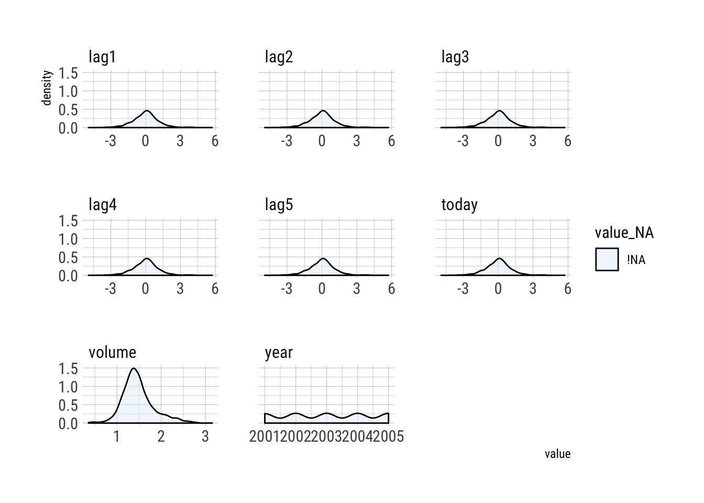

last updated on 2018-10-23
library(tidyverse)
library(broom)
library(patchwork)source("../../R/corr.R")`%<>%` <- magrittr::`%<>%`# set ggplot2 theme
theme_set(hrbrthemes::theme_ipsum_rc())pal <- c(
"#e7f0fa", "#c9e2f6", "#95cbee", "#0099dc", "#4ab04a",
"#ffd73e", "#eec73a", "#e29421", "#f05336", "#ce472e")Classification
When the predictor \(Y\) is assumed to be qualitative (or categorical) rather than quantitative (as in linear regression); classification is the process used to make these predictions, because we are seeking to classify an observation into a category, factor, or class. However, if the classification method first predicts the probability that an observation is a member of a class before assigning the label (which can often be the case) then these methods behave a lot like linear regression. Classification techniques are called classifiers; and the classifiers covered in chapter four are:
The more computationally heavy methods will be covered in other chapters, e.g., generalized additive models(Chapter 7), trees, random forests, boosting (Chapter 8), and support vector machines (Chapter 9)
Overview of classification
Examples of classification problems:
Just as in regression, we use a set of training data \((x_1,y_1),\ldots,(x_n,y_n)\) that we can use to build a classifier. A good classifier performs well on training and test data and what we want is a good classifier.
In the chapter the ISLR::Default data will be used to illustrate the concepts of classification. We’ll be interested in predicting whether or not an individual will default on their credit card payment, on the basis of annual income and monthly credit card balance. The data set is displayed below (Figure 4.1) where annual income and monthly credit card balance is plot for a subset of the 10,000 observations. The right side is boxplots.
default <- ISLR::Default %>% janitor::clean_names()left <- default %>%
sample_n(2000) %>%
ggplot(aes(x = balance, y = income)) +
geom_jitter(aes(color = default), shape = 1, alpha = .7, show.legend = F) +
scale_color_manual(values = c("grey", "red"))
right <- default %>%
ggplot(aes(x = default, y = balance, fill = default)) +
geom_boxplot(show.legend = F) +
scale_fill_manual(values = c("grey", "red")) +
ggplot(default, aes(x = default, y = income, fill = default)) +
geom_boxplot(show.legend = F) +
scale_fill_manual(values = c("grey", "red"))
left + right + plot_annotation(caption = "Figure 4.1") Figure 4.1 This is a very pronounced relationship between predictor balance and response default–in the real world, the relationships between predictors and responses will not be nearly as strong. A somewhat exaggerated predictor/response relationship is helpful for illustrating classification
We will learn to build a model to predict default \((Y)\) for any given value of balance \((X_1)\) and income \((X_2)\). Since \(Y\) is not quantitative, the simple linear regression model of Chapter 3 is not appropriate.
Why not linear regression?
Say we are trying to predict the medical condition of a patient in the emergency room on the basis of their symptoms; in this simplified example, there are three possible diagnoses: stroke, drug overdose, and epileptic seizure. We could encode these as a quantitative response variable, \(Y\), like this:
\[ Y=\begin{cases} 1 & \text{if stroke;} \\ 2 & \text{if drug overdose}\\ 3 & \text{if epileptic seizure} \end{cases} \]
Using this coding, least squares could be used to fit a linear model to predict \(Y\) on the basis of a set of predictors \(X_1,\ldots,X_p\). Unfortunately this coding implies ordering on the outcomes; putting drug overdoese between stroke and epileptic seizure. The ordering is, in reality, arbitrary–we could also encode it like this:
\[ Y=\begin{cases} 1 & \text{if epileptic seizure} \\ 2 & \text{if stroke}\\ 3 & \text{if drug overdose} \end{cases} \]
This would imply a totally different relationship among the three conditions. Each of these codings would produce fundamentally different linear models that would ultimately lead to different sets of predictions on test observations. If the response variable did take on a natural ordering, e.g., mild, moderate, severe, we could use this approach but we would need to be fairly certain that the gap between mild and moderate is nearly the same as the gap between moderate and severe. There is no natuarl way to do this conversion, which is why it’s not a great idea to force data into a model it’s not meant for.
With a binary qualitative response, the situation is better; if there are only two possibilities for the patient’s medical condition: stroke and drug overdoes, we could use a dummy variable from section \((3.3.1)\) to code the response as follows:
\[ Y=\begin{cases} 0 & \text{if stroke} \\ 1 & \text{if drug overdose} \end{cases} \]
We could then fit a linear regression to this binary response, and predict drug overdose if \(\hat{Y}>0.5\) and stroke otherwise. Flipping the coding in this case will not alter the result, so it is not a bad approach. It makes sense and it can be shown that the \(X\hat{\beta}\) obtained is an estimate of \(\Pr(\text{drug overdose}|X\); however, is we use linear regression some of the estimates can fall outside of the \([0,1]\) interval, which would make it hard to interpret as probabilities. We can think of them as crude probability estimates. The dummy variable approach cannot be easily extended to accomodate qualitative responses with more than two levels, which is why it is preferable to use a classification method that is truly suited for qualitative response values.
Using the defualt data set as an example again, remember that the response variable default falls into one of two categoreis: Yes or No. Rather than modeling this reponse logistic regression models the probability that \(Y\) belongs to a particular category.
For the default data, logistic regression models the probability of default, e.g., the probability of default given balance can be written as
\[ \Pr(\text{default}=\text{Yes}|\text{balance}) \]
The values of \(\Pr(\text{default}=\text{Yes}|\text{balance})\), which we abbreviate \(p(\text{balance})\), will range between 0 and 1. So, for any given value of balance, a prediction can be made for default, e.g., we could predict \(\text{default}=\text{Yes}\) for any individual for whom \(p(\text{balance})>0.5\); or, we could be conservative in predicting individuals who are at risk for default and choose a lower threshold, like \(p(\text{balance})>0.1\)1
The logistic model
How should we model the relationship between \(p(X)=\Pr(Y=1|X)\) and \(X\)? (for convenience we’re using 0/1 coding for the response). In \((4.2)\) we talked about using linear regression to represent these probabilities
\[ p(X)=\beta_0+\beta_1X \tag{4.1} \]
If we use this approach to predict default = Yes using balance, then we obtain the model shown in the left hand side of Figure 4.2. We see the problem with this approach: for balances close to 0 we predict a negative probability of default; if we were to predict very large balances we would get values bigger than 1. These predictions are not sensible, since of course the true probability of default, regardless of credit card balance, must fall between 0 and 1. Any time a straight line is fit to a binary response that is coded as 0 or 1 this will occur.
To avoid this problem, we must model \(p(X)\) using a funciton that gives outputs between 0 and 1 for all values of \(X\). Many functions meet this description, but for logistic regression we use the logistic function
\[ p(X)=\frac{e^{\beta_0+\beta_1X}}{1+e^{\beta_0+\beta_1X}} \tag{4.2} \]
To fit model \((4.2)\), we use a method called maximum likelihood, which we discuss in the next section. The right hand side of Figure 4.2 illustrates the fit of the logistic regression model to the default data. In contrast to linear regression low balance predictions using logistic regression estimates are close to but not below 0; likewise, for high balances, estimates are close to but never over 1. This model is better at capturing a range of probabilities than linear regression is and the logistic function will always produce an S-shaped curve of this form, so, regardless of the .
Figure 4.2
Load ISLR data, clean the names and move rownames to id var
market <- ISLR::Smarket %>%
janitor::clean_names() %>%
rownames_to_column("id")Create histogram of all numeric variables
market %>%
keep(~ is.numeric(.x)) %>%
gather() %>%
ggplot(aes(value, fill = key)) +
geom_histogram(bins = 20, show.legend = F) +
facet_wrap(~key, scales = "free_x") +
scale_fill_manual(values = rev(pal))Create boxplot of all numeric variables
market %>%
keep(~ is.numeric(.x)) %>%
gather() %>%
ggplot(aes(x = "value", y = value, fill = key)) +
geom_boxplot(show.legend = F) +
facet_wrap(~ key, scales = "free_y") +
scale_fill_manual(values = pal)Is there any missing data?
naniar::miss_var_summary(market)Density of mising data using shadow matrix
market %>%
keep(~ is.numeric(.x)) %>%
gather() %>%
naniar::bind_shadow() %>%
ggplot(aes(value, fill = value_NA)) +
geom_density(alpha = 0.5) +
facet_wrap(~key, scales = "free_x") +
scale_fill_manual(values = pal)
Look for correlations
corr(market)Create heatmap
corr(market, output = "deep") %>%
ggplot(aes(x = vars, y = corr_vars)) +
geom_tile(aes(fill = corr)) +
geom_text(aes(label = round(corr, 2))) +
scale_fill_gradientn(
limits = c(-1, 1),
colors = pal)Looks like volume and year are the only correlated variables.
Building the logistic regression model
market %>%
mutate(
data_name = "Market",
data_source = "From ISLR",
date_run = Sys.time()) %>%
group_by(data_name, data_source, date_run) %>%
nest() %>%
ungroup() %>%
mutate(
model = map(data, ~ glm(
direction ~ lag1 + lag2 + lag3 + lag4 + lag5 + volume,
data = ., family = binomial))) %>%
mutate(
tidy = map(model, ~ tidy(.)),
glance = map(model, ~ glance(.)),
augment = map(model, ~ augment(.))
)auto <- ISLR::Auto %>% janitor::clean_names()
model_log <- auto %>%
mutate(
model_id = 0123,
model_type = "Supervised",
model_subtype = "Linear Regression",
data_name = "auto",
data_source = "From ISLR",
date_run = Sys.time()) %>%
group_by(model_id, model_type, model_subtype, data_name, data_source, date_run) %>%
nest() %>%
ungroup() %>%
mutate(
model = map(data, ~ lm(
mpg ~ horsepower,
data = .))) %>%
mutate(
tidy = map(model, ~ tidy(.)),
glance = map(model, ~ glance(.)),
augment = map(model, ~ augment(.)),
notes = "",
session_info = list(sessionInfo()))
auto %>%
mutate(
model_id = 0124,
model_type = "Supervised",
model_subtype = "Linear Regression",
data_name = "auto",
data_source = "From ISLR",
date_run = Sys.time()) %>%
group_by(model_id, model_type, model_subtype, data_name, data_source, date_run) %>%
nest() %>%
ungroup() %>%
mutate(
data = map(
data,
~ mutate(
.x,
horsepower2 = horsepower**2)),
model = map(data, ~ lm(
mpg ~ horsepower + horsepower2,
data = .))) %>%
mutate(
tidy = map(model, ~ tidy(.)),
glance = map(model, ~ glance(.)),
augment = map(model, ~ augment(.)),
notes = "",
session_info = list(sessionInfo())) %>%
bind_rows(model_log) %>%
arrange(model_id) -> model_log
model_loglistviewer::jsonedit(model_log %>% filter(model_id == 124))
| Term | Meaning |
|---|
1↩